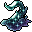

虚無のウーズ Void ooze
英語版 CrawlWiki の記事「Void ooze」(0.33 向け、2025-05-07 版)の翻訳です。原文の著者は編集履歴をご覧ください。
この記事は 0.33 の時点の内容で、最新の 0.34 とは違うところがあるかもしれません。
ジェリーをすべて見るにはジェリーの一覧を参照。
| 虚無のウーズ J  | |
|---|---|
| HP | 33-67 |
| HD | 13 |
| XP | 1110 |
| 速度 | 16 |
| AC | 3 |
| EV | 15 |
| 意志力 | ∞ |
| 攻撃1 | 27(包み込み: 浸水) |
| 攻撃2 | 15(接触: 呪文弱化)
|
| 耐性 | rPois+ rAcid+++ |
| 弱点 | なし |
| 生息地 | 陸上 |
| 知能 | 無知性 |
| 使用 | 何も使わない |
| 分類 | 生物 |
| 体格 | 中くらい |
| 種類 | ジェリー、虚無のウーズ |
| フラグ | 扉を食べる 霊視 盲目化無効 不定形 骨格なし |

| 千の失敗した呪文の粘り気のある残骸で、不安になるほどの速さで押し寄せてくる。その物質そのものが魔法の織物に開いた穴であり、そこでは魔力付与も足がかりを得られない。ほんの一瞬触れただけでも、呪文の力が大きく損なわれることがある。 |
基本情報
虚無のウーズは動きも攻撃も速く、相手を包み込み、MP を奪う攻撃をしてくる。スライムの穴ぐらでよく見かけるが、迷宮の深い階や深層に出ることもある。
小技
- 虚無のウーズに包み込まれると、離れるか倒すかするまで、実質的に静寂をかけられたのと同じになる。虚無のウーズがいるときは、ジェリーに囲まれないように気をつけよう。
- 回避はそこそこ高く呪術も効かないが、ほかに守りらしい守りはなく、打たれ強くもない。必中のダメージ呪文やワンド、発動品を使えば簡単に片づけられる。